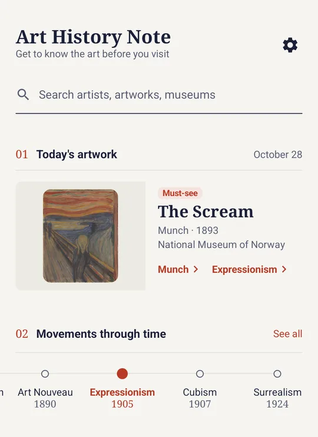
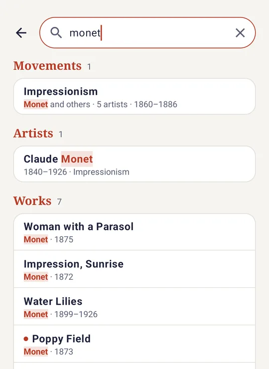
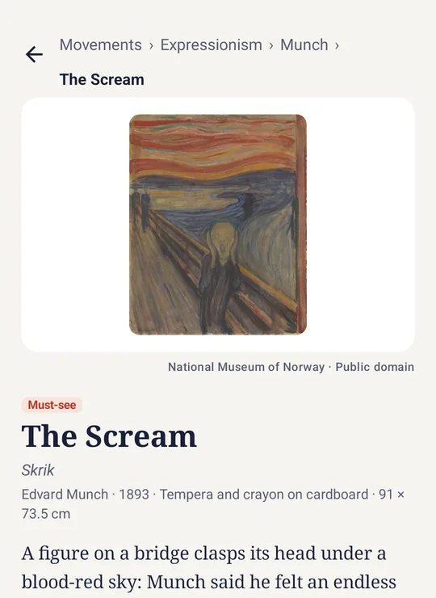

Artwork of the day
A different masterpiece on the home screen each day. The same artist or movement never shows up two days in a row.
Android app · English & Korean
From the Renaissance to Surrealism, search the movements that shaped Western art, the artists who led them and the paintings they left behind. Then see where each work hangs today.

Each movement in the app explains its features and background, and lists its key artists.

Search
One search box covers everything in the app. Results are grouped into movements, artists and works, with the matching words highlighted.
monet모네L'Angéluscezanne
Artworks and artists
Each artwork has a short description, a viewing tip, and its date, medium, size and museum. Each artist has a short biography and their major works.
For the day you go and see the paintings in person.
A different masterpiece on the home screen each day. The same artist or movement never shows up two days in a row.
The Louvre, Musée d'Orsay, Uffizi, Prado, The Met and more. Filter by country, and see each museum's collection by movement and artist.
Save the works you want to see at each museum. On the day, use them as a checklist, with each visit kept by date.
Artwork images are public domain reproductions, taken first from museums' own open-access collections and otherwise from Wikimedia Commons. Each image shows its source.
Works whose artists are still under copyright are shown with an abstract substitute illustration, clearly marked as a substitute, instead of the real painting.